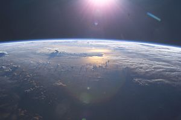

Oceanul Pacific (de la numele latin Mare Pacificum = mare liniștită) este cel mai mare ocean din lume, acoperind aproximativ 33% din suprafața Pământului. Oceanul are o suprafață totală de 179,7 milioane de km² și se întinde pe aproximativ 15.500 km de la Strâmtoarea Bering în nord și până la Marea Ross în Antarctica. Limita vestică a oceanului este Strâmtoarea Malacca, iar la est oceanul e mărginit de continentul America. Pacificul conține în jur de 25.000 de insule, numite Insulele Pacifice, mai mult decât conțin toate celelalte oceane împreună. Groapa Marianelor, aflată în nord-vestul oceanului, este cel mai adânc punct de pe planetă, având o adâncime de 11.022 m.
Originea numelui
Oceanul a fost numit "pacific" deoarece primii marinari europeni au găsit o apă deosebit de liniștită dincolo de Capul Horn, punctul cel mai sudic al Țării de Foc. În pofida numelui, în Pacific există nenumărate furtuni, taifunuri, uragane, cutremure subacvatice, tsunamiuri și alte fenomene naturale cu energii uriașe.
Numele oceanului a fost dat de navigatorul portughez Ferdinand Magellan. ESTE cel mai mare oceam al pamantului si se imparte in 2 bucati.emisfera sudica si nordica.
Caracteristici
Suprafața oceanului Pacific este - socotind și mările secundare - 181,34 milioane km², sau, fără acestea, 166,24 milioane km², ceea ce constituie aproximativ 35 % din suprafața totală a Pământului sau mai bine de jumătate din suprafața totală a mărilor și oceanelor. Suprafața Pacificului este astfel mai mare decât suma suprafețelor tuturor continentelor. Volumul de apă este de 714,41 milioane km³ cu tot cu mările secundare, sau 696,19 milioana km³ fără apa din mările secundare. Adâncimea medie este de 3.940 m, dacă sunt luate în considerație mările secundare, sau 4.188 m fără acestea. Adâncimea maximă este de 11.034 m.
Temperaturile înregistrate în apele oceanului la ecuator sunt între 25–30 °C. De asemenea, și salinitatea apei variază: apa din zona ecuatorului este mai puțin sărată decât apa dinspre poli, datorită precipitațiilor ecuatoriale abundente din timpul anului. Apa Oceanului Pacific este în medie mult mai caldă decât apa Oceanului Atlantic. Relieful submarin al Pacificului este foarte variat. Câteva formațiuni subacvatice importante, de întinderi uriașe, sunt: dorsala Pacificului, Inelul de foc (vulcanism), bazine, ridicături ("munți" subacvatici), abisuri, șanțuri ș.a.
Vedere generală
Oceanul acoperă aproape o treime din suprafața pământului, având o suprafață de 179,7 milioane km², mai mare decât întreaga suprafață a continentelor. El se întinde pe direcția nord-sud pe aproximativ 15.500 km de la Marea Bering din Oceanul Arctic până la marginile înghețate ale Mării Ross din Antarctica la sud (deși regiunea Antarctică din sudul Pacificului este numită câteodată Oceanul Sudic), iar pe direcția vest-est se întinde pe aproape 19.800 km, din Indonezia până la coastele Columbiei și Peru (la nivelul paralelei de 5° N, această distanță reprezentând peste jumătate din lungimea acestei paralele și de peste 5 ori diametrul Lunii). Limita vestică a oceanului este plasată pe Strâmtoarea Malacca. Cel mai adânc punct de pe planetă este Groapa Marianelor, la 11.034 metri sub nivelul mării. Adâncimea medie este de 4.280 metri.
Pacificul cuprinde peste 25.000 de insule, mai mult decât suma tuturor insulelor din celelalte oceane, majoritatea aflându-se la sud de ecuator.
În prezent, Oceanul Pacific se micșorează, încet dar permanent, ca urmare a mișcării plăcilor tectonice, cu aproximativ 2-3 cm pe an pe 3 laturi, ceea ce înseamnă aproximativ 0,5 km² pe an (în timp ce Oceanul Atlantic se mărește permanent).
Furtună în orașul Pacifica, California
De-a lungul coastei vestice neregulate a oceanului există multe mări, cele mai mari fiind Marea Celebes, Marea Coral, Marea Chinei de est, Marea Filipinelor, Marea Japoniei, Marea Chinei de Sud, Marea Sulu, Marea Tasmaniei și Marea Galbenă. Strâmtoarea Malacca unește, la vest, Pacificul cu Oceanul Indian, iar Strâmtoarea Drake și Strâmtoarea Magellan fac legătura, la est, cu Oceanul Atlantic. Și Canalul Panama unește la est Pacificul cu Atlanticul. În sfârșit, la nord, Strâmtoarea Bering face legătura cu Oceanul Arctic.
Deoarece meridianul de 180° trece prin Pacific, Pacificul de vest (de lângă Asia) se află de fapt în emisfera estică a Pământului, iar Pacificul de est (de lângă America) se află în emisfera vestică.
Într-o mare parte a călătoriei lui Magellan - de la Strâmtoarea Magellan și până în Filipine - oceanul a fost chiar liniștit. Dar Pacificul nu este mereu pașnic. Multe cicloane tropicale (echivalentul uraganelor din Atlantic) lovesc insulele Pacificului. Locurile din preajma îmbinărilor plăcilor tectonice sunt pline de vulcani și sunt des afectate de cutremure. Tsunamiurile, valuri imense declanșate de cutremure subacvatice, au devastat multe insule și au distrus multe orașe.
Caracteristicile apei
Apus de soare în districtul Monterey County, California, SUA.
În Pacific temperatura apei variază de la punctul înghețului, în zonele polare, până la circa 30 °C la ecuator. Salinitatea variază în funcție de latitudine: apa este mai puțin sărată lângă ecuator decât cea din zona temperată, din cauza precipitațiilor abundente din zona ecuatorială / tropicală. Și spre poli salinitatea este mai mică, deoarece evaporarea este foarte scăzută.
În general apa Pacificului se mișcă în sensul acelor de ceasornic în emisfera nordică a Pământului și în sens opus în emisfera sudică. Curentul ecuatorial de Nord se mișcă spre vest de-a lungul paralelei de 15° N, apoi se întoarce spre nord lângă Filipine pentru a deveni curentul cald Japonez sau Curentul Kuroshio.
Cotind spre est la 45° N, curentul Kuroshio se bifurcă: o parte din apă se mișcă spre nord formând Curentul Aleutian, în timp ce restul se mișcă spre sud pentru a se reuni cu Curentul Ecuatorial de Nord. Curentul Aleutian se ramifică în apropierea Americii de Nord și formează baza circulației de formă triunghiulară din Marea Bering. Ramura sudică a lui devine liniștitul și încetul curent Californian.
Curentul Ecuatorial de Sud, curgând spre vest de-a lungul ecuatorului, cotește spre sud la estul Noii Guinee, apoi spre est în dreptul paralelei de 50° S și se unește cu principalul curent vestic al Pacificului de Sud, ce include curentul circumpolar antarctic ce înconjoară pământul. În timp ce se apropie de coasta chiliană, Curentul Ecuatorial de Sud se divide; o ramură curge împrejurul Capului Horn, iar cealaltă o ia spre nord pentru a forma curentul Perului sau Curentul Humboldt